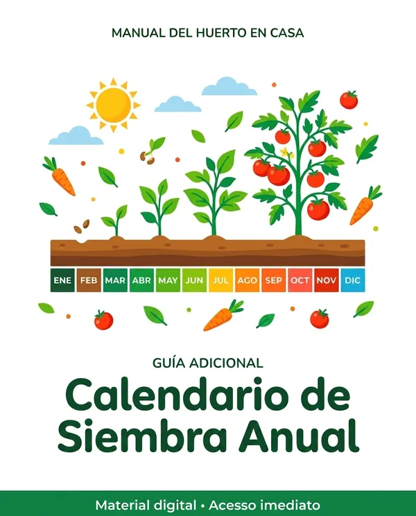
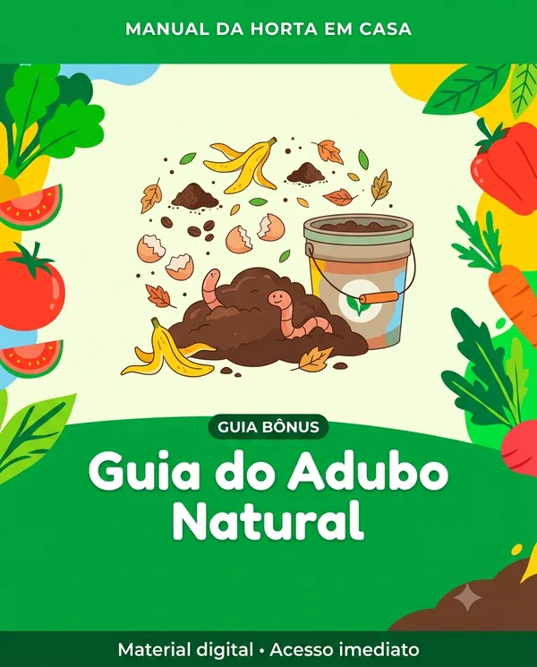

Bono 1
Qué plantar mes a mes, para nunca perder el momento justo.
De R$27 GRATIS

Aprende a armar tu propia huerta en casa, desde cero — y cosecha verdura fresca, limpia y sin veneno, aunque nunca hayas plantado nada en tu vida.
QUIERO MI HUERTA EN CASA🌱 Desde R$10 · acceso inmediato
Alimentos llenos de agrotóxicos y químicos. Ingieres un poco cada día, sin darte cuenta — venenos que se acumulan en el cuerpo generando enfermedades, problemas hormonales y hasta cáncer.
Cosechas tu propio alimento, fresco, limpio y sin ningún agrotóxico, al momento, en el patio de tu casa — aunque nunca hayas plantado nada en tu vida.
Ideal para quien nunca tuvo contacto con el cultivo y está empezando ahora: el paso a paso es desde cero, sin necesidad de experiencia.
Perfecto para quien ama las plantas, meter las manos en la tierra y tener más verde y vida dentro de casa.
Indicado para quien quiere poner alimento fresco, saludable y sin veneno en la mesa de los que ama.
Ideal para quien busca una actividad tranquila, placentera y saludable para hacer a su propio ritmo, en casa.

Qué plantar mes a mes, para nunca perder el momento justo.
De R$27 GRATIS

Convierte cáscaras y restos de cocina en comida para tu huerta, gratis.
De R$27 GRATIS

Recetas caseras para proteger tus plantas, sin ningún veneno.
De R$27 GRATIS

Cebollín, perejil y albahaca siempre a mano.
De R$27 GRATIS
⏳ La oferta de hoy termina en:
R$10
pago único
✅ El Manual de la Huerta en Casa completo
✅ Acceso inmediato
R$29,90
pago único · o en cuotas con tarjeta
El Manual + los 4 bonos que aceleran tu huerta:
✅ El Manual de la Huerta en Casa completo
🎁 Bono 1 — Calendario de Siembra Anual
🎁 Bono 2 — Guía del Abono Natural
🎁 Bono 3 — Control de Plagas sin Veneno
🎁 Bono 4 — Condimentos Frescos en Casa
✅ Acceso inmediato · Garantía de 7 días
🔒 Pago 100% seguro · 📱 Acceso inmediato tras el pago

"Creía que necesitaba un patio enorme. Empecé con cuatro macetas en el balcón y ya estoy cosechando mi propia ensalada."

"Nunca había plantado nada. Seguí el paso a paso y nació mi primera lechuga. No lo cambio por nada."
"Lo que más me gusta es saber exactamente de dónde viene lo que como. Eso no tiene precio."
Tienes 7 días para abrir el Manual, ponerlo en práctica y verlo con tus propios ojos. Si crees que no es para ti, solo pides el reembolso — y te devuelvo cada centavo, sin ninguna pregunta.
El riesgo es todo mío.
Puedes seguir dependiendo de la góndola del supermercado y de lo que la industria decide poner en tu plato.
O puedes empezar hoy a cosechar tu propio alimento, fresco, en el patio de tu casa.
QUIERO MI HUERTA EN CASA🌱 Desde R$10 · acceso inmediato tras el pago
No. Puedes empezar en un balcón, con macetas.
Puedes. El Manual está hecho para quien empieza desde cero.
Es digital. Llega a tu correo al momento del pago — se abre en el celular o en la computadora.
Sí. El calendario de siembra te muestra qué plantar en cada época del año.